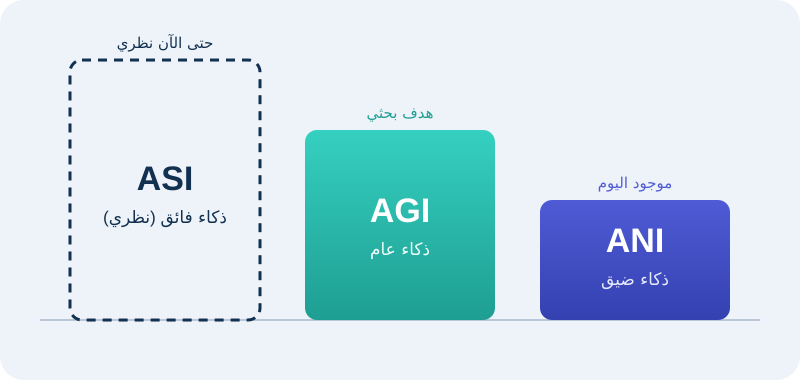
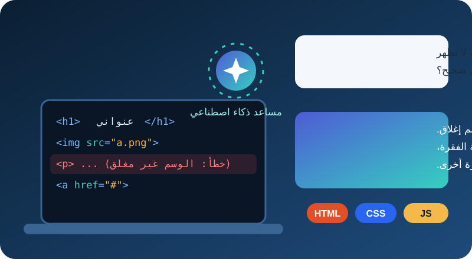
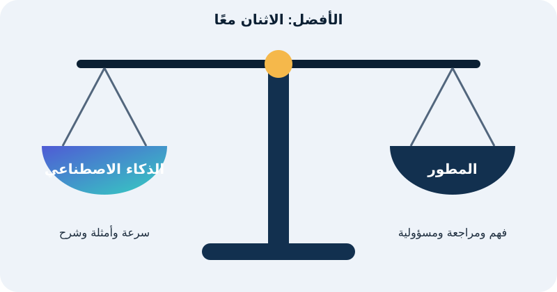

عرض الموضوع
ما هو الذكاء الاصطناعي؟
الذكاء الاصطناعي فرع من علوم الحاسوب يهدف إلى تصميم أنظمة وبرامج قادرة على أداء مهام تتطلب ذكاءً بشريًّا، مثل التعلم والفهم والتعرف على الكلام واتخاذ القرار وحل المشكلات. ويُقسَّم إلى ثلاثة مستويات:

| النوع | الاسم | الوصف |
|---|---|---|
| ANI | ذكاء اصطناعي ضيق | أنظمة مخصصة لأداء مهام محددة بدقة عالية، مثل التعرف على الصور أو الترجمة. |
| AGI | ذكاء اصطناعي عام | أنظمة ذات قدرة ذكائية مشابهة للبشر في أداء مختلف المهام. |
| ASI | ذكاء اصطناعي فائق | ذكاء يتجاوز القدرات البشرية في كافة المجالات، وهو حتى الآن نظري. |
أهمية الذكاء الاصطناعي
- تحسين الكفاءة والإنتاجية: أتمتة المهام الروتينية والمعقدة بسرعة ودقة أكبر.
- توفير الوقت والجهد: إنجاز مهام متعددة في وقت أقل ليتفرغ الإنسان للمهام الإبداعية والاستراتيجية.
- دعم اتخاذ القرار: تحليلات وبيانات دقيقة تساعد على قرارات مستنيرة.
- تحسين جودة الحياة: خدمات ذكية في الصحة والتعليم والنقل وغيرها.
- الابتكار: حلول مبتكرة لمشكلات معقدة في مختلف الصناعات.
استخدامات الذكاء الاصطناعي

| المجال | أمثلة على الاستخدام |
|---|---|
| الرعاية الصحية | تشخيص الأمراض، تحليل الصور الطبية، تطوير الأدوية، إدارة السجلات الصحية. |
| التعليم | أنظمة تعلم مخصصة، تكييف المناهج حسب احتياجات الطالب، دعم التعلم عن بعد. |
| التجارة الإلكترونية | توصيات المنتجات، تحليل سلوك العملاء، خدمة العملاء عبر روبوتات المحادثة. |
| النقل | السيارات ذاتية القيادة، تحسين حركة المرور، تخطيط الطرق. |
| الزراعة | مراقبة المحاصيل، تحليل الطقس، الروبوتات في الزراعة الدقيقة. |
| الأمن السيبراني | كشف التهديدات والهجمات الإلكترونية وتحليل البيانات الأمنية. |
| الصناعة | روبوتات خطوط الإنتاج، تحسين التصنيع، الصيانة التنبؤية. |
أبرز تطبيقات الذكاء الاصطناعي
- المساعدات الصوتية: سيري وأليكسا ومساعد جوجل للتذكير وتشغيل الموسيقى والإجابة عن الاستفسارات.
- تحليل البيانات الضخمة: استخلاص رؤى واستراتيجيات من كميات هائلة من البيانات.
- التعرف على الصور والفيديو: المراقبة والتعرف على الوجوه والسيارات ذاتية القيادة.
- الروبوتات الذكية: في الصناعة والمستودعات وحتى المنازل.
- المحادثات الآلية (Chatbots): خدمة عملاء على مدار الساعة في البنوك والتجارة والدعم الفني.
- التعلم الآلي والعميق: تعلم الآلات من البيانات للتنبؤات الطبية والترجمة وتحليل النصوص.
الذكاء الاصطناعي التوليدي في خدمة المطور
يعمل أشبه بمعلم خصوصي متاح في أي وقت: يشرح الكود سطرًا بسطر، ويوضح لماذا يعمل أو لا يعمل، ويقترح إصلاحًا، ويعطي مثالًا مبسطًا. وهذا مفيد للمبتدئين في تعلم HTML وCSS وJavaScript. ويوضح الجدول التالي مقارنة بين أداتين شائعتين.

| وجه المقارنة | ChatGPT | Gemini |
|---|---|---|
| الجهة المطورة | شركة OpenAI | شركة Google |
| نوع الأداة | مساعد محادثة توليدي | مساعد محادثة توليدي |
| الاستخدام في البرمجة | شرح الأكواد، اقتراح حلول للأخطاء، تقديم أمثلة | شرح الأكواد، اقتراح حلول للأخطاء، تقديم أمثلة |
| التعامل معها | كتابة الأمر ثم قراءة الرد ومراجعته | كتابة الأمر ثم قراءة الرد ومراجعته |
طريقة استخدامه بشكل صحيح
- اسألاكتب سؤالًا محددًا عن الكود أو الخطأ الذي تواجهه.
- افهماقرأ الشرح ولا تنسخ الإجابة قبل أن تفهمها.
- جرّبطبّق الكود في المحرر وشاهد النتيجة في المتصفح.
- راجعتحقق من الإجابة بمصدر موثوق مثل MDN.
التحديات المستقبلية

- الأخلاقيات والخصوصية: كيفية التعامل مع البيانات الشخصية واتخاذ قرارات ذات تأثير إنساني.
- التحيز والتمييز: قد تعكس الأنظمة تحيزات موجودة في بيانات التدريب.
- فقدان الوظائف: القلق من استبدال الإنسان بالآلات في بعض المجالات.
- التحكم والمسؤولية: من يتحمل المسؤولية عند حدوث أخطاء أو قرارات خاطئة؟
الخلاصة
الذكاء الاصطناعي مجال يُعنى بتصميم أنظمة تحاكي الذكاء البشري في التعلم واتخاذ القرار وحل المشكلات، ويتنوع من ذكاء محدود إلى فائق. يساعد في تحسين الإنتاجية ودعم القرارات في الصحة والتعليم والنقل والتجارة. وتطبيقاته واسعة مثل المساعدات الصوتية وتحليل البيانات، لكنه يواجه تحديات أخلاقية واجتماعية كخطر التحيز وفقدان الوظائف.
الفكرة الرئيسية: الذكاء الاصطناعي التوليدي مساعد ممتاز للمطور المبتدئ، لكنه لا يغني عن الفهم والتعلم والتجربة البشرية.